Local UI¶
A polished, single-user web UI for traces, eval runs, prompts, guardrail events,
and agents — shipped inside the fastaiagent wheel. Runs on your laptop, reads
from ./.fastaiagent/local.db, nothing leaves the machine.
Your project, your UI
Zero Docker. Zero Postgres. Zero cloud account.
pip install 'fastaiagent[ui]', run fastaiagent ui, done.
Install¶
The UI's web stack (FastAPI, uvicorn, aiosqlite, bcrypt, itsdangerous) lives behind an optional extra so non-UI users don't pay for it.
First run¶
First launch prompts for a username and password, saves a bcrypt-hashed
credential to ./.fastaiagent/auth.json, and opens your browser on
http://127.0.0.1:7842.
FastAIAgent Local UI — first run
Set a username: upendra
Set a password: ***
Confirm password: ***
✓ Credentials saved to ./.fastaiagent/auth.json
Starting UI on http://127.0.0.1:7842
Opening browser...
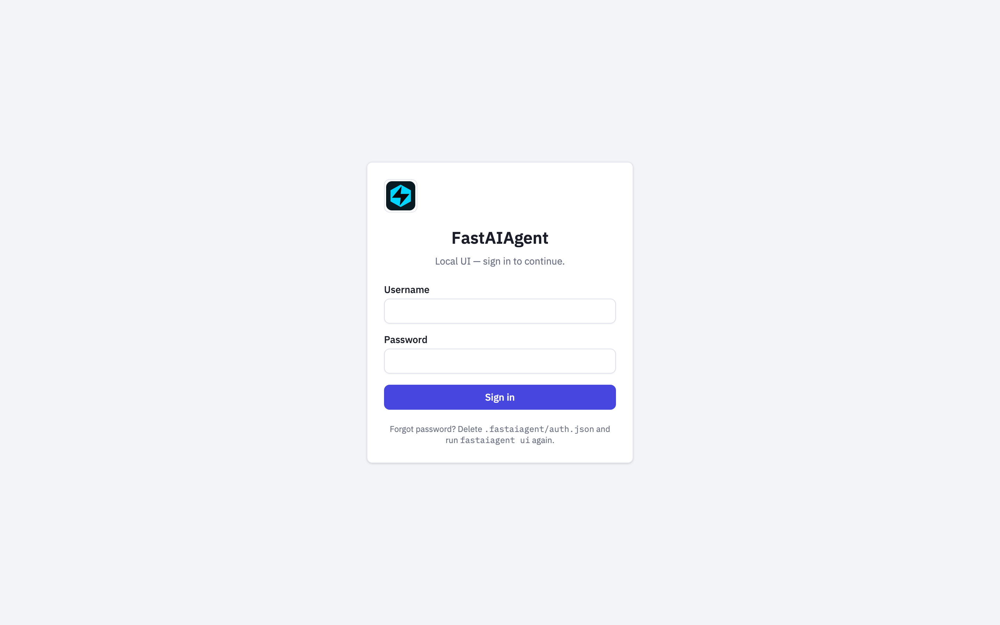
Flags¶
| Flag | Default | Effect |
|---|---|---|
--host |
127.0.0.1 |
Bind address. Keep on loopback unless you really need LAN access. |
--port |
7842 |
Pick anything you like. |
--no-auth |
off | Skip login entirely. Intended for throwaway containers, not everyday use. |
--no-open |
off | Don't launch the browser. |
--db PATH |
./.fastaiagent/local.db |
Override the local DB path. Also settable via FASTAIAGENT_LOCAL_DB. |
--auth-file PATH |
./.fastaiagent/auth.json |
Override the credentials file. |
Forgot password¶
Deletes ./.fastaiagent/auth.json. Next fastaiagent ui prompts you to
create new credentials.
Tour¶
Screenshots below are captured from a real running instance against the
seeded snapshot DB — they stay in sync with the code via
scripts/capture-ui-screenshots.sh.
Home¶
The overview lands you on "what happened since I last looked": traces in the last 24 hours, failing traces, eval runs in the last 7 days, and average pass rate. Two side-panels list the most recent traces and eval runs so you can jump straight in.
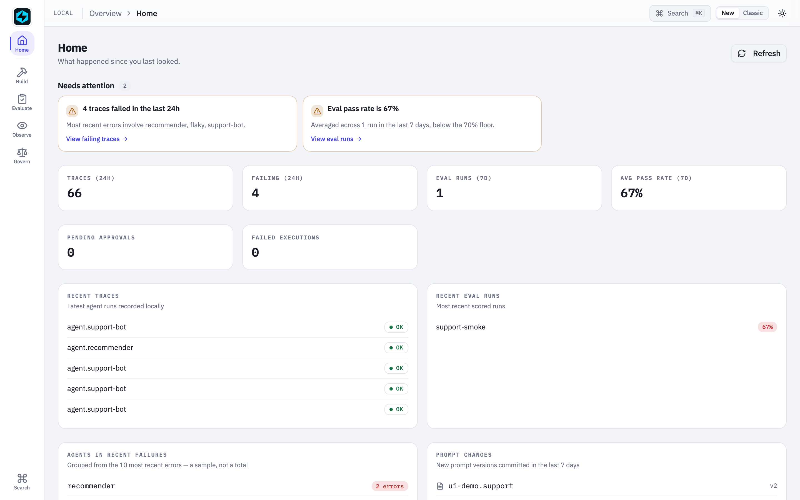
Traces¶
Compact, monospace-numeric list with filters on top: search across name/input/output, time-range pills (15m / 1h / 24h / 7d / All), status selector, runner-type pill (Agent / Chain / Swarm / Supervisor), agent name, and thread id. Every row carries a Workflow badge that tells you at a glance whether the trace was a single agent or a multi-agent orchestration. Per-row copy-trace-id, favorite, and delete buttons. Click any row to open the detail view; multi-select + bulk delete available from a sticky toolbar.
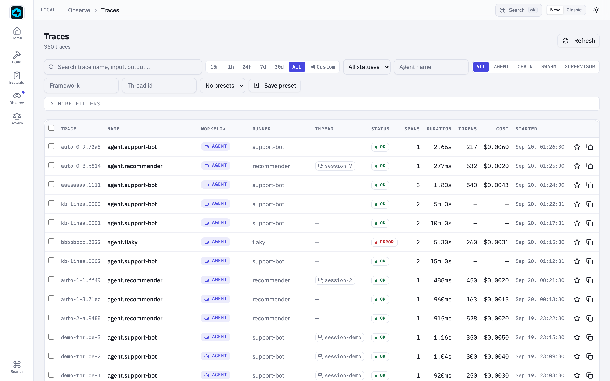
How workflows are traced¶
Agent.arun() emits an agent.<name> root span. When you run a
Chain, Swarm, or Supervisor, the SDK wraps the whole run in
one chain.<name> / swarm.<name> / supervisor.<name> root span, and
every child agent + LLM call nests beneath it. That means a 3-agent
chain is one trace with a tree, not three orphan agent traces — and
the Workflow badge shows you which kind of runner it was.
Everything the SDK does is traced as a span in that tree:
| Span name | Emitted by | Notable attributes |
|---|---|---|
agent.<name> |
Agent.arun() |
agent.name, agent.input, agent.output, agent.tokens_used, agent.latency_ms, agent.llm.* |
chain.<name> / swarm.<name> / supervisor.<name> |
Chain.execute() / Swarm.arun() / Supervisor.arun() |
fastaiagent.runner.type, chain.node_count, swarm.entrypoint, etc. |
llm.<provider>.<model> |
LLMClient.complete() |
gen_ai.request.*, gen_ai.usage.*, gen_ai.response.* |
tool.<name> |
every @tool / FunctionTool.aexecute |
tool.name, tool.args, tool.status, tool.result, tool.error |
retrieval.<kb_name> |
LocalKB.search() / PlatformKB.search() |
retrieval.backend, retrieval.search_type, retrieval.query, retrieval.top_k, retrieval.result_count, retrieval.latency_ms, retrieval.doc_ids |
The Inspector's Input tab surfaces whichever of *.input / tool.args /
retrieval.query is present on the selected span; Output surfaces
*.output / tool.result / retrieval.doc_ids / gen_ai.response.*.
Payload-bearing attributes (messages, queries, doc ids) respect
FASTAIAGENT_TRACE_PAYLOADS=0 if you want structural-only tracing.
Trace detail¶
Summary bar across the top with trace id, agent, duration, span count, tokens, cost, and status pill. The left pane is a Gantt-style span tree — icons and colors per span type (agent / LLM / tool / retrieval / guardrail), indentation reflects the parent→child relationship, error spans are marked. The right pane is an inspector with four tabs:
| Tab | Contents |
|---|---|
| Input | What went into this step. Picks the input-shaped keys out of span attributes: gen_ai.request.messages, agent.input, tool.args, retrieval.query, etc. |
| Output | What the step produced. Picks the output-shaped keys: gen_ai.response.content, agent.output, tool.result, retrieval.doc_ids, etc. |
| Attributes | Everything else — the remaining OpenTelemetry attributes (agent name, model, tokens, cost, runner type, thread id, payload-gated retrieval fields, …). |
| Events | OpenTelemetry-level timestamped occurrences attached to the span — separate from attributes. See below. |

About the Events tab¶
A span's events are a list of {name, timestamp, attributes} records.
The dominant case in the fastaiagent SDK is automatic: whenever code
running inside a span raises, OTel's span.record_exception(exc)
records an event named "exception" carrying three well-known
attributes:
exception.type— e.g.ValueErrorexception.message— the exception messageexception.stacktrace— the full traceback as a multi-line string
The UI recognizes this shape and renders it as a dedicated exception card: type in bold red, message on one line, full traceback hidden behind an expandable Traceback disclosure (so the page stays scannable). A clean happy-path run leaves this tab empty.
Custom span.add_event(name, attributes) calls — or events from other
OpenTelemetry auto-instrumentation — render with a generic name row
plus a collapsible JSON attributes viewer.
Agent Replay¶
The same span tree as Trace Detail, but with a Fork here button in the header. Pick a span on the tree, open the fork dialog.
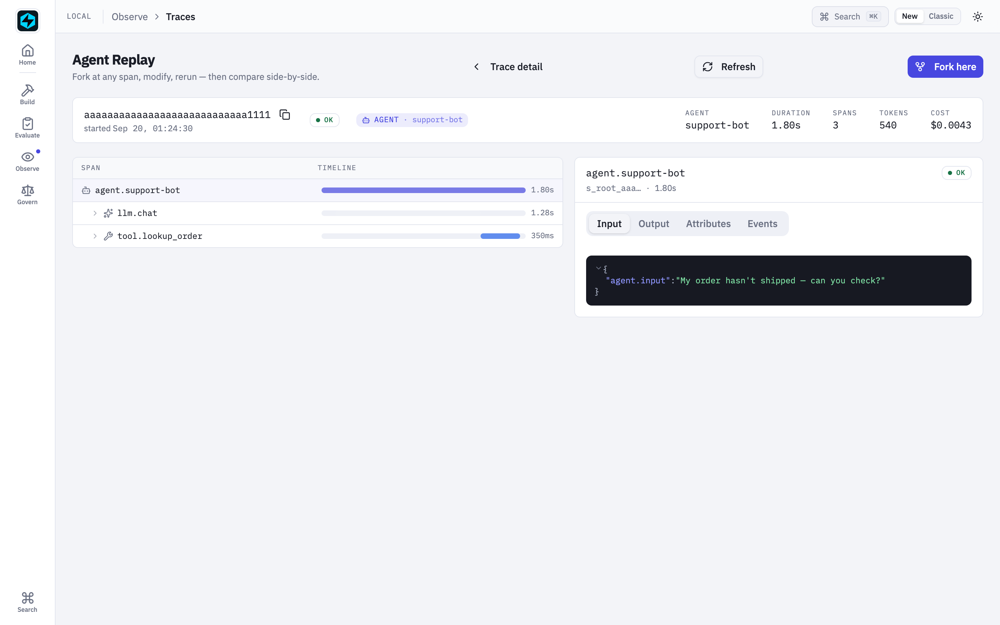
The fork dialog has four tabs for the four kinds of modification:
- Prompt — override the system prompt at the forked step.
- Input — provide a new input JSON at this span.
- Tool response — inject a canned tool return value.
- LLM params — change temperature / max tokens.
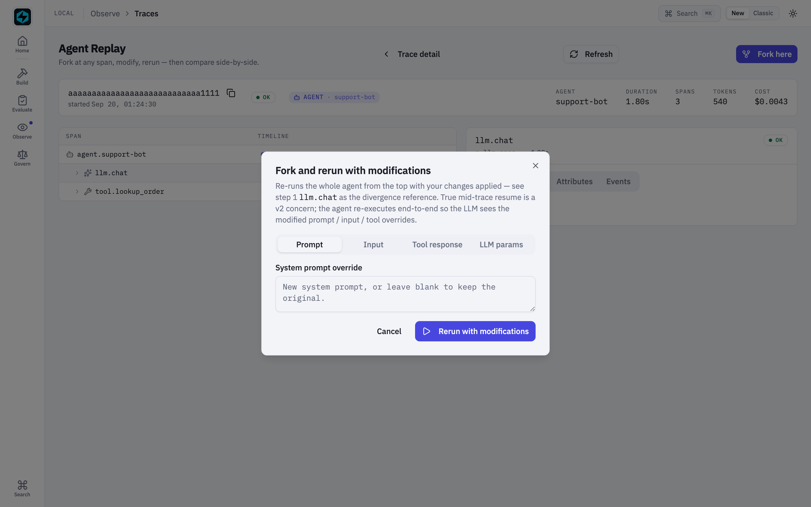
After rerun completes, a side-by-side comparison panel appears below with
the original vs. new output and a step-by-step comparison of both traces,
highlighting where they diverged. A Save as regression test button
appends the case to ./.fastaiagent/regression_tests.jsonl so
evaluate() can pick it up.
Eval runs¶
A pass-rate trend chart at the top (runs over time, grouped by dataset) plus a table of every run with dataset, scorers, pass-rate bar, total cost (derived from the traces each case ran on), avg latency, and started-ago.
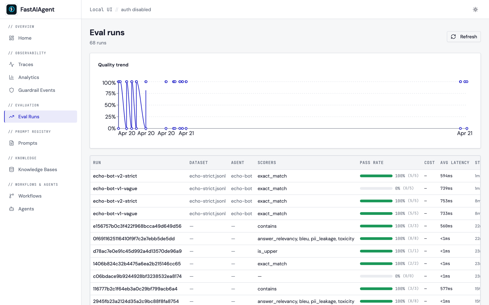
Click a run to see per-case results. The header shows a row of scorer chips — each chip colored by pass-rate (green ≥90%, amber 70–89%, red <70%) with the raw pass/total count right-aligned — so you see which scorer is dragging the run down at a glance. Above the cases table, a filter bar lets you narrow down by outcome (passed/failed), by scorer, or by substring match on input/expected/actual.
Each case row has a chevron — click it and the row expands in-place to
show the input, a side-by-side expected vs actual diff powered by
react-diff-viewer-continued, the per-scorer chips (with reasons on
hover), and Trace + Replay buttons to open the originating
trace.
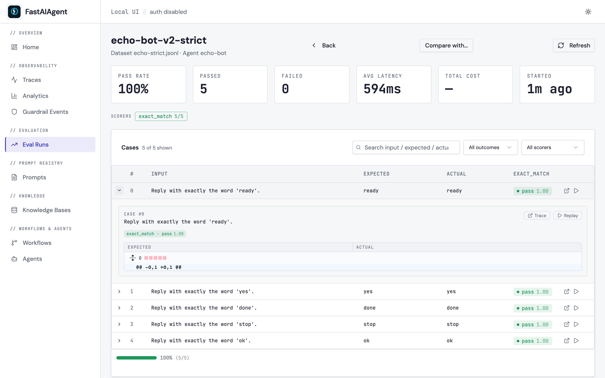
Compare two runs¶
From any run detail page, click Compare with… (or visit
/evals/compare directly) to pick two runs and see what changed.
The compare page groups cases into four buckets:
- Regressed — passed in A, failed in B. Red card.
- Improved — failed in A, passed in B. Green card.
- Unchanged pass / Unchanged fail — counted but not expanded, so the page stays focused on what actually changed.
Each regressed / improved case renders as a CaseDiffCard with two
side-by-side diffs: expected vs actual (B) on top, and actual
(A) vs actual (B) below so you can see exactly how the output
drifted between runs. Scorer chips are ringed with a primary border
when that particular scorer flipped between A and B. Header stats
show pass-rate delta and cost delta.
Cases are matched between the two runs first by ordinal, with a
fall-back to input equality — so a dataset with reordered cases
still aligns correctly.
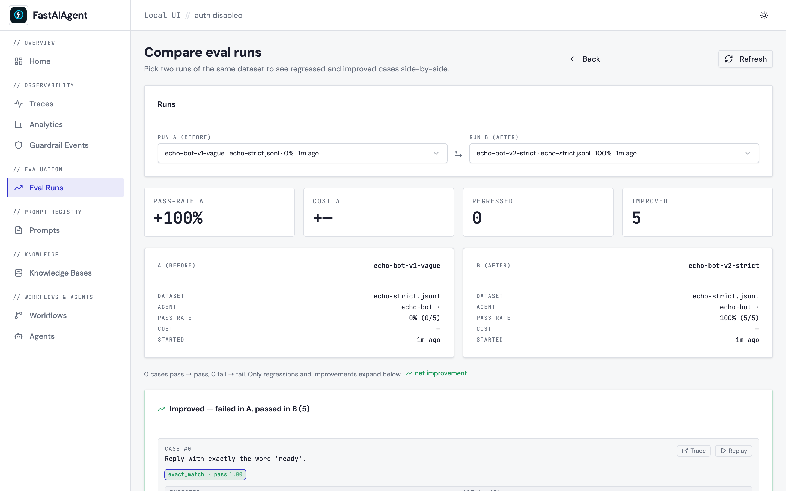
See examples/40_evals_compare.py
for an end-to-end before/after demo you can run against your own
OPENAI_API_KEY. It prints the exact /evals/compare?a=…&b=… URL
when it's done.
Prompts¶
Registry browser — list every prompt with latest version, total versions, and the number of traces that used it. Click to edit.
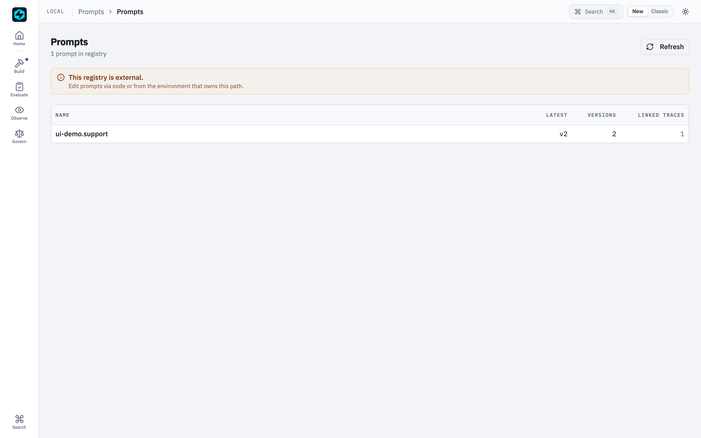
The editor lists versions on the left, with the template on the right
(auto-detected {{variable}} placeholders shown in the header). Save
creates a new version; the lineage panel below lists every trace and eval
run using this prompt.
When the registry lives outside the current project folder the editor is disabled and a banner explains why (the rule is "UI mutates only what's clearly local and personal"; external paths are owned by whoever runs that environment).
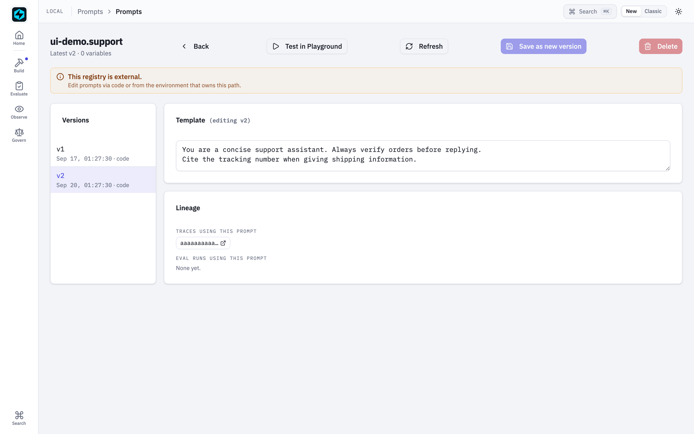
Playground¶
// PROMPT REGISTRY → Playground. Pick a prompt, fill its variables,
choose a model, click Run, watch the response stream back. Edit the
template inline for one-off experiments, attach an image for vision
models, or click Save as eval case to append the input/output pair
to a JSONL dataset. Every run emits a trace tagged
fastaiagent.source = "playground" so playground experiments share the
same observability surface as production runs. See
Prompt Playground.
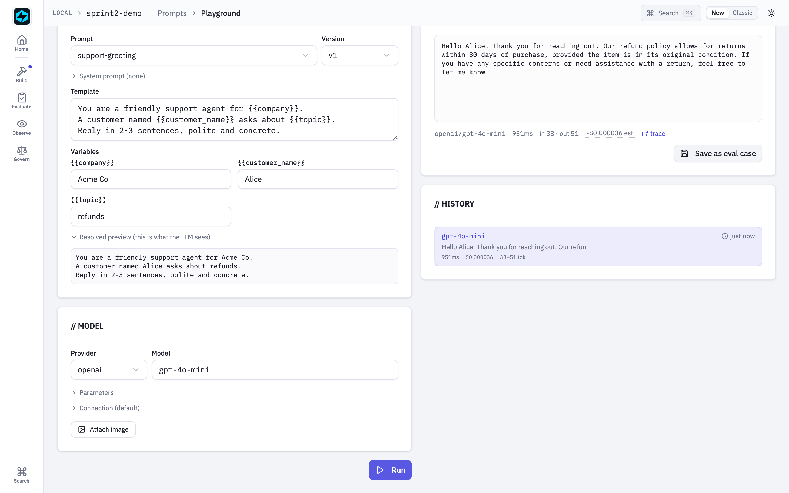
Agent dependency graph¶
The Dependencies tab on any /agents/{name} page shows a structural
"what is this agent made of" view: tools, knowledge bases, prompts,
guardrails, model — all clickable, with click-through to the
dependency's own detail page. For Supervisors, workers appear as
sub-agent subtrees; for Swarms, peers appear as siblings with handoff
edges. See Agent Dependency Graph.
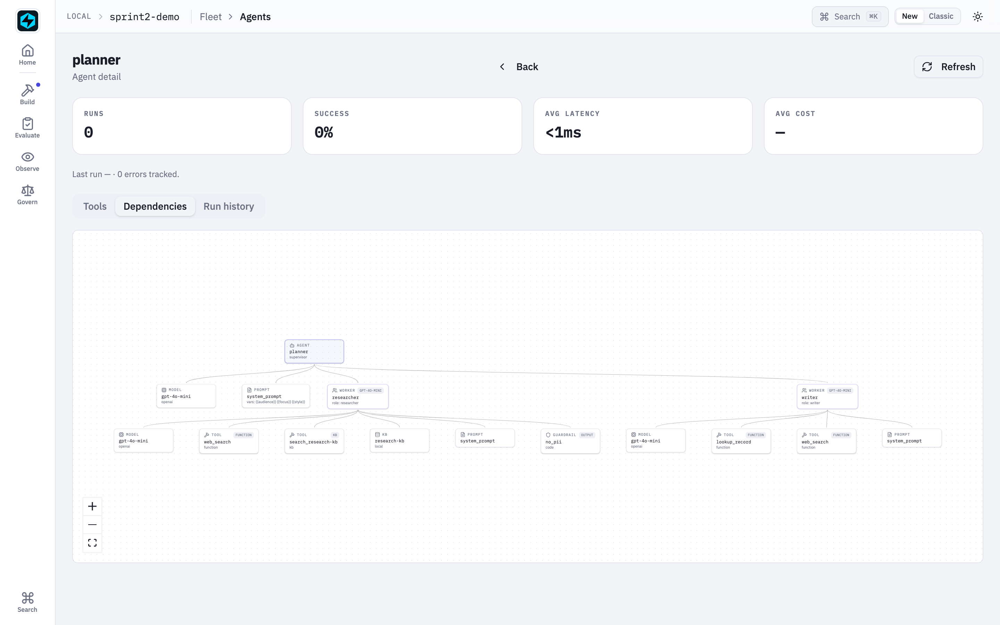
Guardrail event detail¶
Click any row on /guardrails (or any guardrail badge in the Scores
card on a Trace Detail) to open the event's detail page. Three panels
break down what triggered it, which rule matched, and what
happened next — with a before/after diff for filtered events and an
LLM judge prompt+response for llm_judge rules. The execution-context
section below shows the surrounding span timeline plus other
guardrails that ran on the same content. Mark as false positive
flips a flag stored on the event row that persists across refreshes
and feeds the new FP: yes / FP: no filter on the list page. See
Guardrail Event Detail.
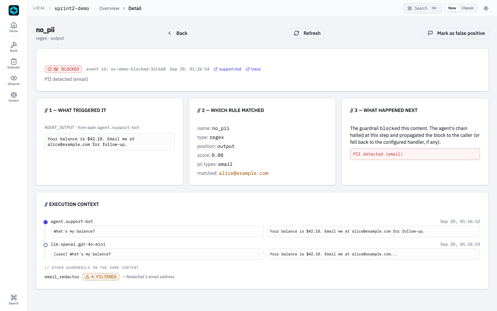
Guardrail events¶
Every guardrail firing — name, type, position, outcome pill (passed / blocked / warned), score, agent, message. Filter by rule / outcome / agent. Click the ↗ icon to jump to the parent trace.
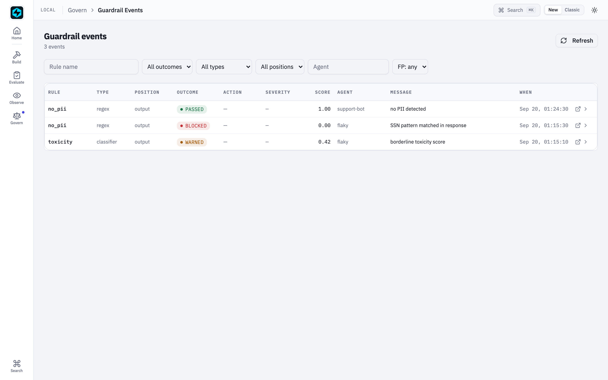
Workflows¶
Read-only directory of every chain, swarm, and supervisor run by the
SDK. One card per (runner_type, workflow_name), with node count,
runs, success rate, avg latency, avg cost, and last run time. Top-of-page
tabs filter the list by runner type (All / Chains / Swarms / Supervisors).
Click a card to open the workflow's detail page, which drills into the
trace list filtered by runner_type + runner_name — so you see every
run of that specific chain/swarm/supervisor, nothing else.
The screenshots below are from actual agent runs (via
examples/39_workflows_demo.py),
not synthetic fixtures:
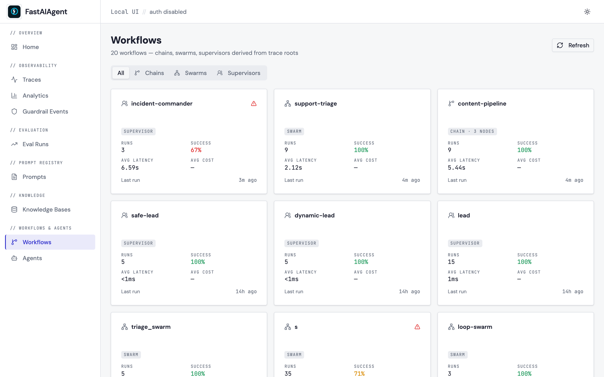
Filter by runner type — swarms only:
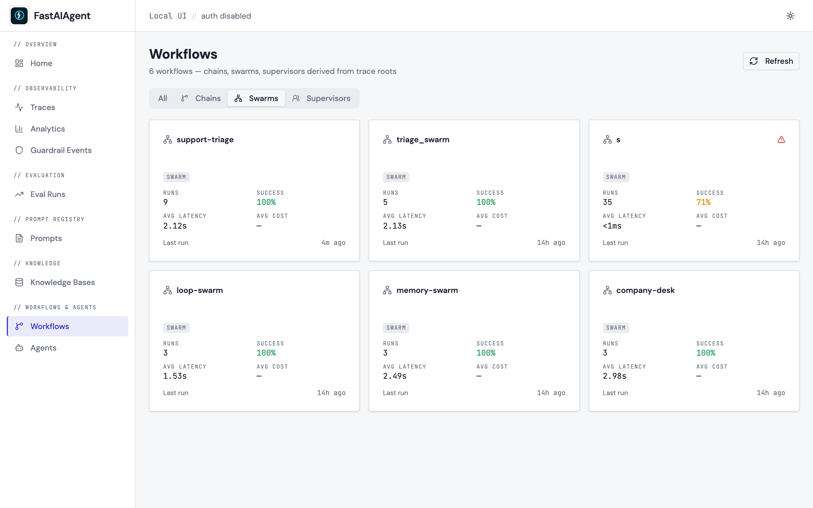
Drill into one workflow to see its per-run trace list:
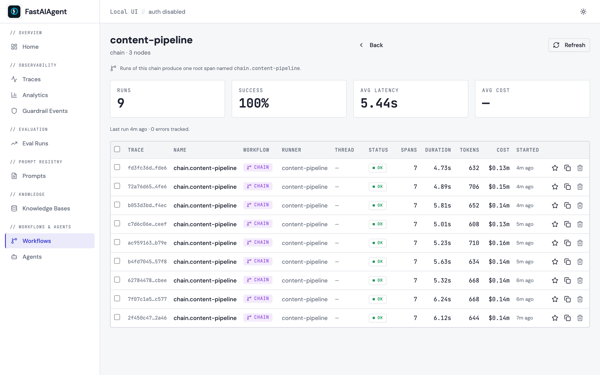
Topology view¶
When a runner is registered with build_app(runners=[chain]), the
detail page also renders an interactive React Flow topology of nodes and
edges. Conditional edges, HITL gates, swarm handoffs, and supervisor
delegations all get distinct visual treatments. See
Workflow visualization for the full
reference.
Multimodal trace rendering¶
Span input/output tabs render inline image thumbnails and PDF cards when the message content carries them — no more raw base64 in the JSON. See Multimodal traces for the full reference and a screenshot.
Checkpoint inspector¶
The execution detail page (/executions/{id}) shows a vertical
timeline of every checkpoint, expandable to reveal state_snapshot /
node_input / node_output, with an automatic state diff between
adjacent expanded rows and an idempotency-cache panel listing the
@idempotent results that would be skipped on resume. See
Checkpoint inspector.
Cost tracking¶
A // COST BREAKDOWN section at the bottom of Analytics slices spend three ways: by model, by agent, or by chain node. See Cost tracking.
Export trace as JSON¶
The trace detail page has an Export button that opens a dialog with
checkboxes for embedding attachment bytes and checkpoint state. The
same export is available via fastaiagent export-trace --trace-id <id>
--output <path> on the CLI. See Export trace as JSON.
Project scoping¶
The header breadcrumb shows the current project name
(Local UI // my-project // auth disabled). Every read endpoint
filters by project_id so multiple projects can share a single
Postgres backend without cross-contamination. See
Project scoping.
Agents¶
Cards summarizing every agent the SDK has seen: run count, success rate
(color-graded), average latency, average cost, last-run time. Click a card
to see the full trace list filtered to that agent, plus a Tools section
showing what's registered, what's been called, and origin-typed chips
(function, kb, mcp, rest, custom).
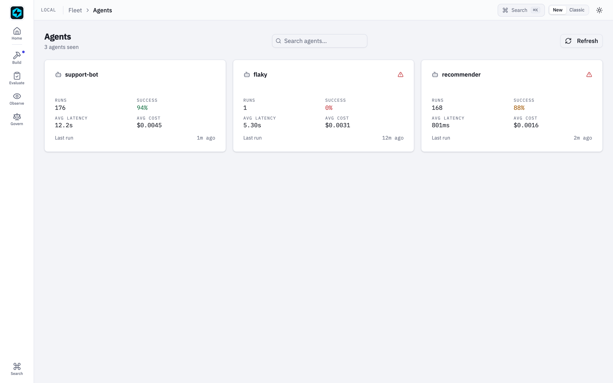
Tools per agent¶
Each row on /agents/:name shows one tool with:
- Name + description — the tool's declared signature.
- Origin chip — color-coded by kind:
function(green) for@tool/FunctionTool,kb(blue) forLocalKB.as_tool(),mcp(purple) for MCP-backed tools,rest(amber) forRESTTool,custom(grey) for user-definedToolsubclasses,unknown(red) for hallucinated names the LLM called but weren't registered. - Calls / success / avg latency / last used — aggregated from every
tool.*span under anagent.<name>span. - Status badges —
unusedwhen a tool is registered but has never been called (suggests dead code),unregisteredwhen the LLM has called a tool name that wasn't in the agent'stools=[...]list (suggests a hallucinated tool call — worth a guardrail).
Registered tools come off the most recent agent root span's
agent.tools attribute (SDK emits this automatically from
to_dict()). Usage data comes from descendant tool.* spans. Traces
emitted before 0.9.4 won't have origin recorded — those rows render
with the unknown chip.
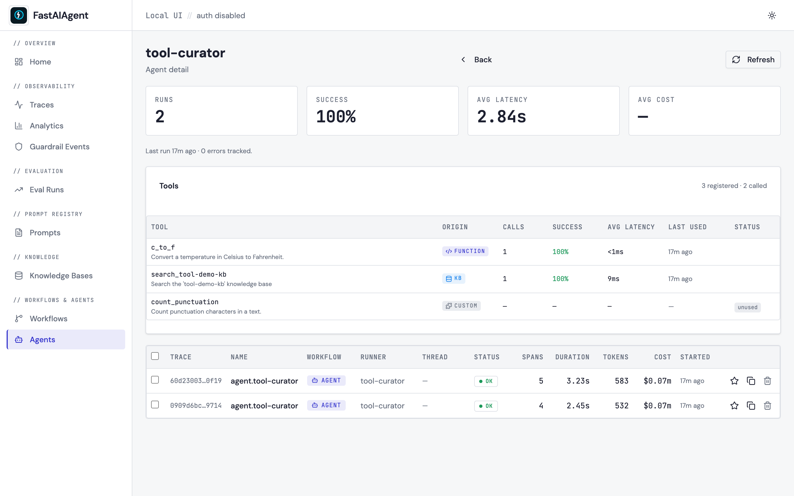
See examples/41_agent_tools.py
for a runnable demo that registers one tool of each origin, runs the
agent, and points you at the detail page.
Analytics¶
Latency percentiles (p50 / p95 / p99), cost over time, error rate, and trace volume charts across a configurable window (24h / 7d / 30d). Below, top-5 slowest agents and top-5 priciest agents — Langfuse-style signals that tell you where to invest performance or cost work.
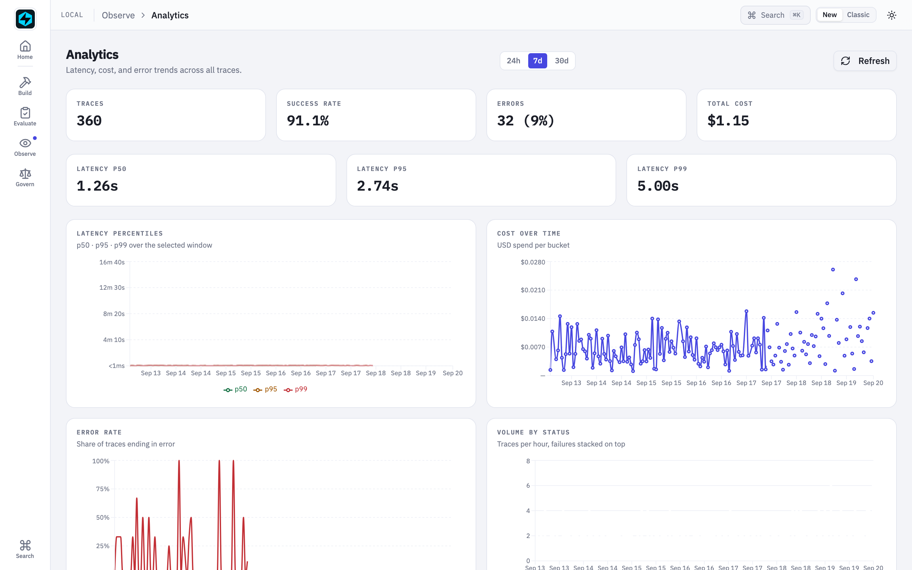
Thread view¶
Agent runs that share the same thread_id span attribute group into a
thread (equivalent to a "session" in Langfuse). Open one from the Thread
column on the Traces list, from the pill on a Trace Detail summary bar, or
by hitting /threads/<id> directly.
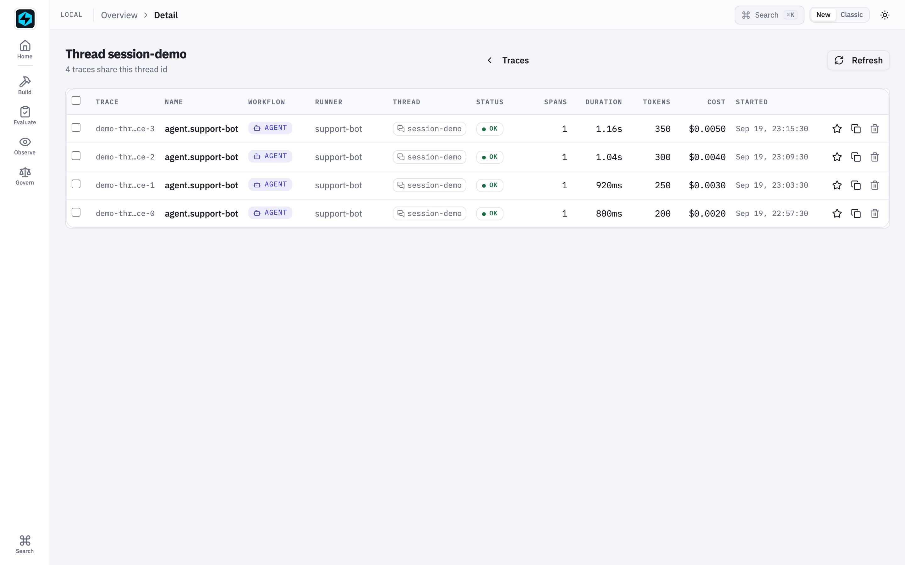
Scores on a trace¶
The Trace Detail page now shows every score attached to the trace: each guardrail event (passed / blocked / warned) and every eval case that pointed at this trace. Click through to the owning eval run.
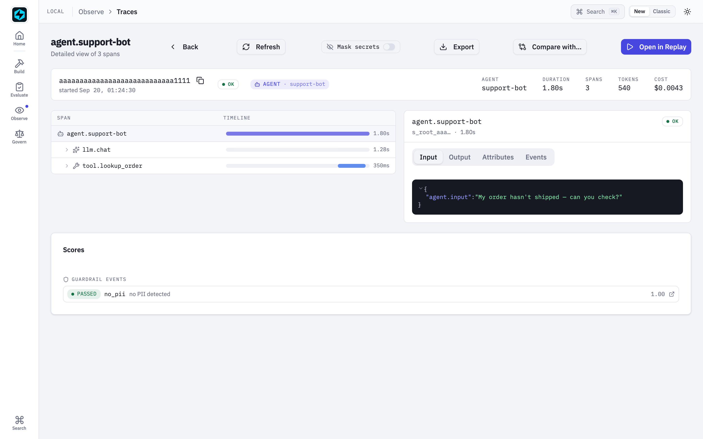
Knowledge Bases (read-only)¶
Sidebar → Knowledge Bases. Every LocalKB collection found under
./.fastaiagent/kb/ (or $FASTAIAGENT_KB_DIR) appears with its document
count, chunk count, size on disk, and last-updated timestamp.
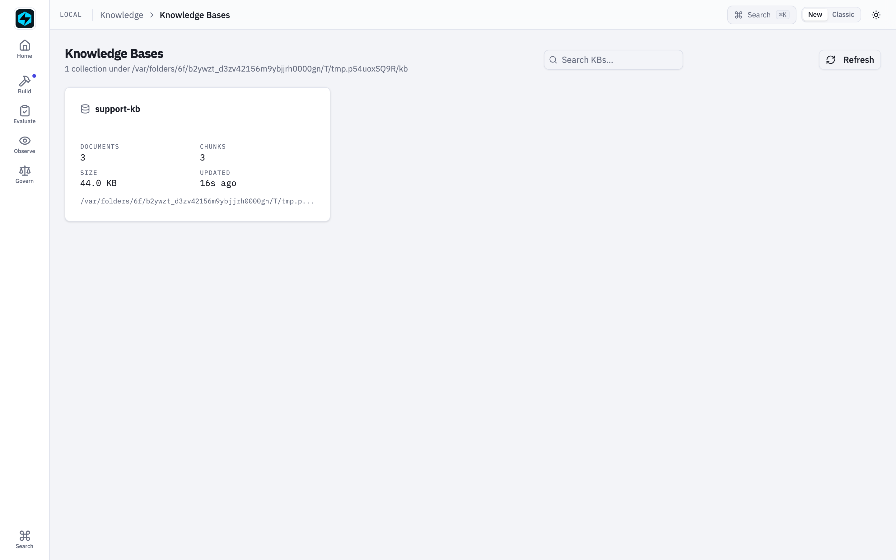
Open a collection to get three tabs:
- Documents — every ingested source with chunk count and preview; click one to see its chunks inline.
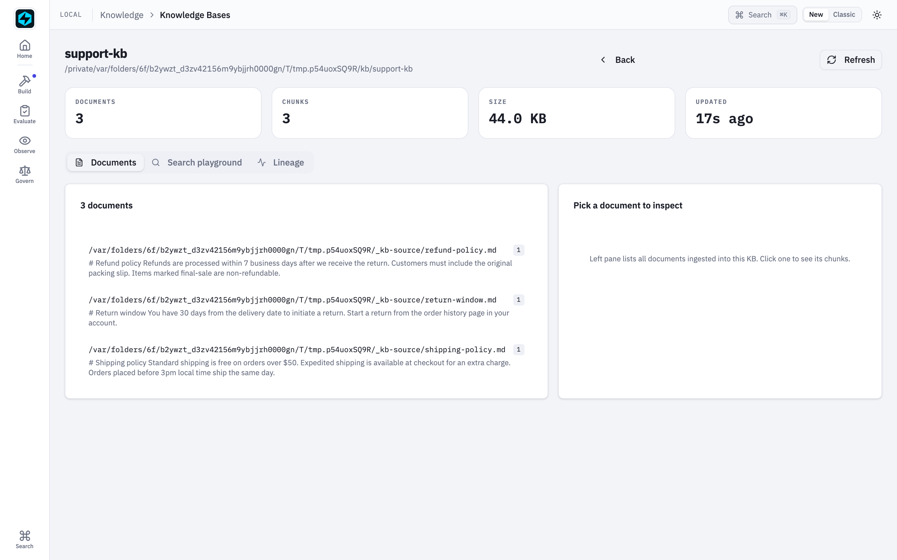
- Search playground — type a query, pick a
top_k, click Run. The UI calls the samekb.search()you'd use from code and shows ranked chunks with similarity scores and metadata. No streaming — one request, one set of results, user clicks Refresh for more.
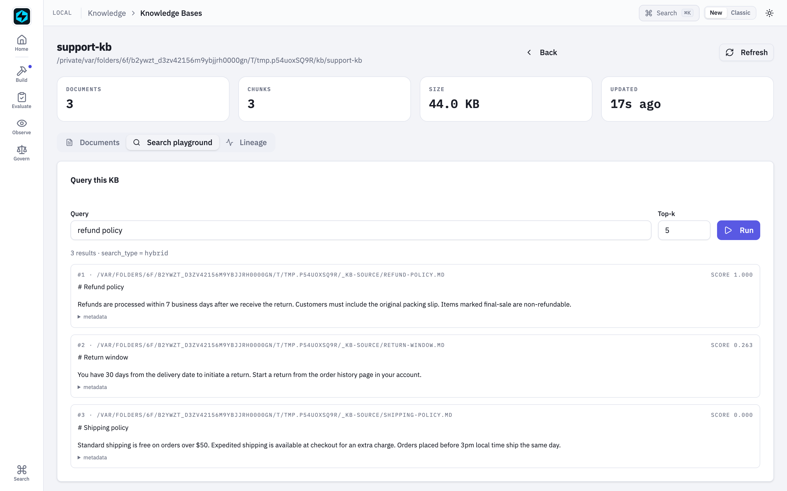
- Lineage — agents and recent traces that issued
retrieval.<kb>spans, derived from the spans table. Great for answering "who's actually hitting this KB and when?"
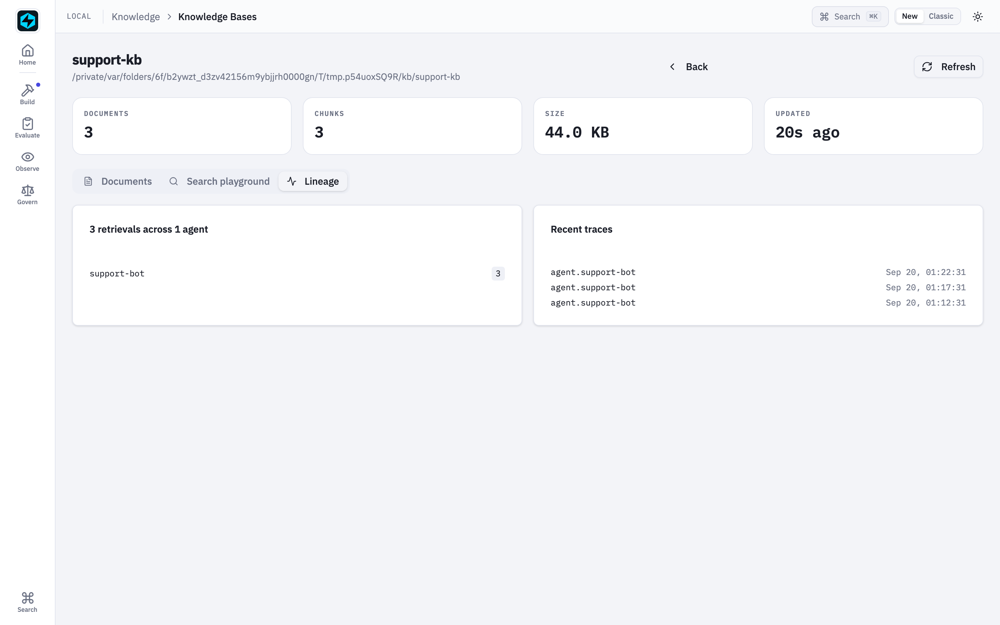
The UI never writes to a KB. Adding, deleting, or re-indexing documents
stays in code (kb.add(), kb.delete(), kb.clear()) — the Local UI
is a read-only browser, consistent with the rest of Local tier.
See KB browser → for the full tour.
Managing disk space¶
Traces add up. Two ways to clean up:
- Per-row: trash icon on any row of
/traces, with a confirmation dialog that lists exactly what will be removed (spans, notes, favorites, and linked guardrail events — eval cases are kept with a nulledtrace_id). - Bulk: select checkboxes on the left of
/tracesand click Delete N in the sticky bulk-action toolbar.
Or at the filesystem level, rm .fastaiagent/local.db nukes everything
local and fastaiagent ui starts fresh.
Data¶
Everything lives in a single SQLite file at ./.fastaiagent/local.db:
| Category | Tables |
|---|---|
| Traces | spans |
| Checkpoints | checkpoints |
| Prompts | prompts, prompt_versions, prompt_aliases, prompt_fragments |
| Evals | eval_runs, eval_cases |
| Guardrails | guardrail_events |
| UI view-state | trace_notes, trace_favorites, saved_filters |
No cloud dependency. No external service. Copy the file, back it up, or
rm .fastaiagent/local.db to start fresh.
Migration from 0.7.x¶
0.7.x wrote three locations: .fastaiagent/traces.db, .fastaiagent/checkpoints.db,
and ./.prompts/*.yaml. 0.8 unifies them into ./.fastaiagent/local.db.
Copies spans, checkpoints, prompts, and fragments from the legacy stores
into local.db. Idempotent — safe to run multiple times. Legacy files are
left in place; delete them once you've confirmed the report.
fastaiagent ui start invokes migrate automatically when it notices
legacy files on first launch.
Architecture¶
The UI is a FastAPI server plus a static React SPA:
fastaiagent ui ──► FastAPI (uvicorn) ──► local.db (SQLite)
│ ▲
▼ │
static/index.html │ writes
+ assets/ │
agent runs,
guardrail execs,
evaluate() calls
The frontend is a plain React 19 + Vite SPA built at release time and bundled
into the wheel under fastaiagent/ui/static/. At runtime, FastAPI serves the
bundle and an /api/* REST surface. There is no WebSocket or live stream —
every page refreshes on user action via React Query.
Privacy¶
- Binds to
127.0.0.1by default — nothing on your LAN can reach it. HttpOnly+SameSite=Strictsession cookie.- No telemetry. No phone-home. No account.
--no-authis available for throwaway containers but NOT the default.
Testing¶
The UI ships with a full test pyramid:
- Backend (pytest) —
tests/test_ui_server.pyexercises every REST route against a real FastAPI app + real SQLite fixtures + real bcrypt auth.tests/test_ui_events.py,tests/test_ui_cli.py,tests/test_ui_migration.py,tests/test_ui_db.pycover the rest. - Frontend unit (Vitest + Testing Library) — real DOM rendering
through the Provider stack (
src/test/utils.tsx). Coverage includes format helpers, status badges, pass-rate bar, sidebar routing, traces table, span tree interactions, and the login flow. - Frontend E2E / screenshots (Playwright) —
ui-frontend/tests/screenshots.spec.tsdrives a real browser against the FastAPI server and captures the screenshots shown above. Run it with:
The script seeds a snapshot DB, starts the server on 127.0.0.1:7843 in
--no-auth mode, runs every screenshot test, and tears down.
All three layers run against real libraries (real SQLite, real FastAPI, real browser, real bcrypt) — no mocking of the subject under test.